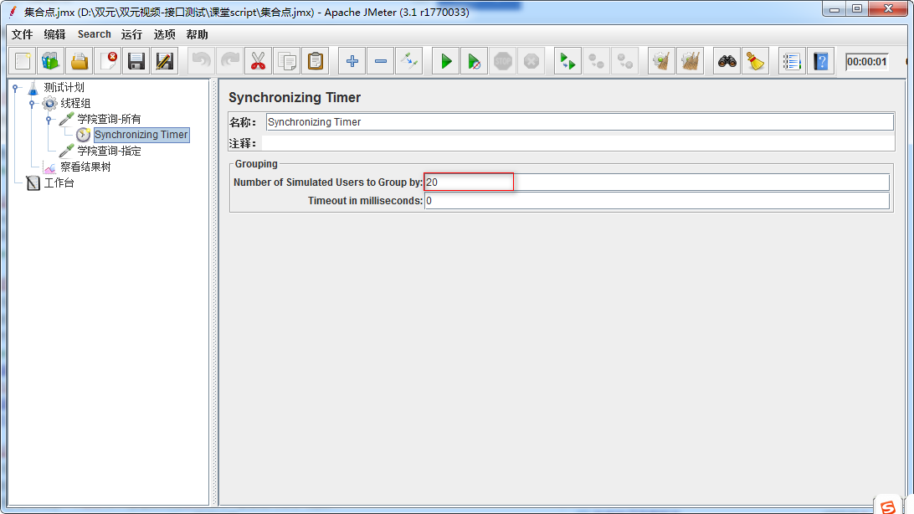

Jmeter 集合点
目标
- 掌握集合点的场景及使用
1. 需求
1. 学院查询-所有 http://127.0.0.1:8000/api/departments/
2. 学院查询-指定 http://127.0.0.1:8000/api/departments/T02/
需求对(学院查询-所有)这个接口进行20个用户【同时】请求访问操作。
问题
1. 设置线程组循环次数为：20，解决不了需求问题
2. 设置线程组线程数量为：20，同样解决不了问题
2. 集合点
作用：集合点用以同步虚拟用户，以便恰好在同一时刻执行任务。
2.1 解决方案分析
1. 测试计划->线程组
2. 线程组->Sampler->HTTP请求(学院查询-所有)
3. 线程组->Sampler->HTTP请求(学院查询-指定)
4. HTTP请求(学院查询-所有)->定时器->Synchronizing Timer
5. 测试计划->监听器->察看结果树
2.2 技术难点分析
1. 线程数>=20
2. 集合点设置
2.3 集合点参数配置图

1. Number of Simulated Users to Group
by:集合多少用户后再执行请求（也就是执行的线程数）
扩展选项：
2. Timeout in milliseconds：超时时间(毫秒)
1) 设置为0，无限等待，直到达到集合点设置的线程数。
2) 设置指定时长，如果到达指定时长，集合点数量未到达，集合多少用户释放多少用户数量。
2.4 集合点作用域
1. 集合点只对一个请求起作用，如果针对指定请求起作用，放到该请求内；
2. 集合点对多个个请求起作用，放到与请求平级同一层次；
2.5 集合点-总结
1. 集合点作用
2. 集合点作用域